Choose who is controlled
Initial-frame masks identify each character, including characters with the same appearance. Assign each one a player or NPC role.
Anonymous research project
Assign control roles to individual characters. Direct the players with actions, and let NPCs respond to interactions through conditional rules.
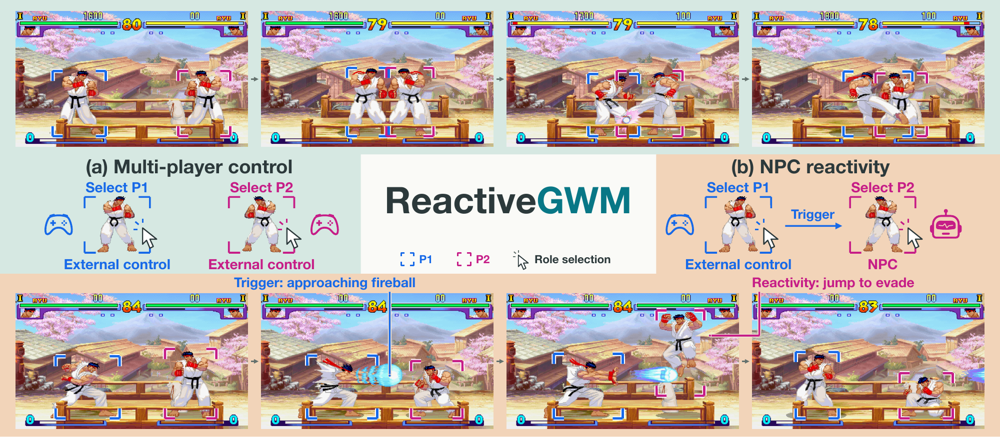
Existing game world models typically bind player and NPC roles to fixed characters. This limits multi-character games, where different characters may receive external control and NPCs must react to player-triggered interactions. ReactiveGWM assigns flexible control modes at initialization and jointly simulates externally controlled players and reactive NPCs. Spatial Role Binding grounds learned character handles in initial-frame regions using instance masks. Unified Agency Conditioning encodes player actions and conditional NPC rules into control-token groups, binding each group to the corresponding character handle. We study this interface in two shared-view 2D games: Street Fighter III and Hikou no mizu.
Initial-frame masks identify each character, including characters with the same appearance. Assign each one a player or NPC role.
Players receive action sequences. NPCs receive an instruction describing a trigger and the response to execute.
The model generates all characters together and uses causal video context to interpret NPC rules as interactions unfold.
The method
Spatial Role Binding anchors character handles in the first frame. Unified Agency Conditioning connects each character’s actions or rule to its handle through cross-attention.
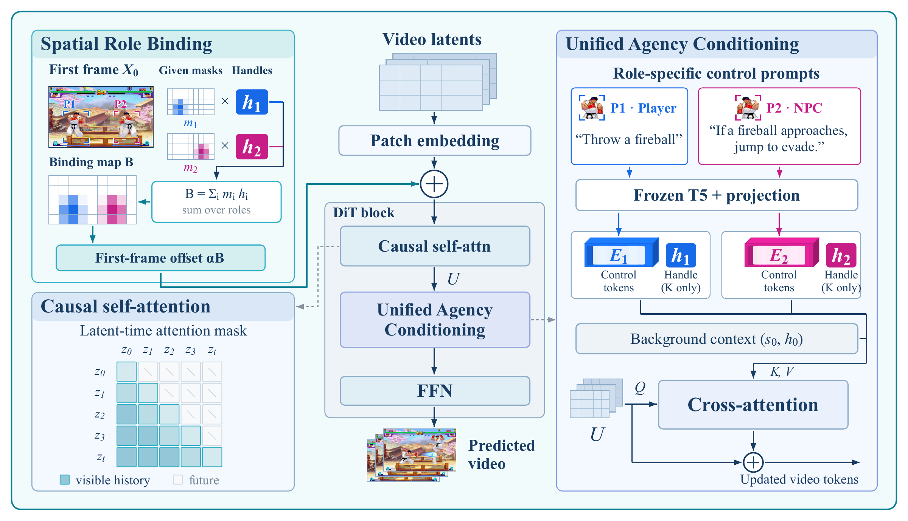
Handles are injected into cross-attention keys; values carry control text. Causal self-attention reads the current and past latent frames. Training uses flow matching over future video latents.
View full-size figure ↗01 / Generated rollouts
Two fighters share one scene. External player actions provide the interaction context for the NPC’s conditional response.
10 selected demos
Video 1 / 10
If the opponent jumps toward this NPC, anti-air that jump-in before the opponent lands.
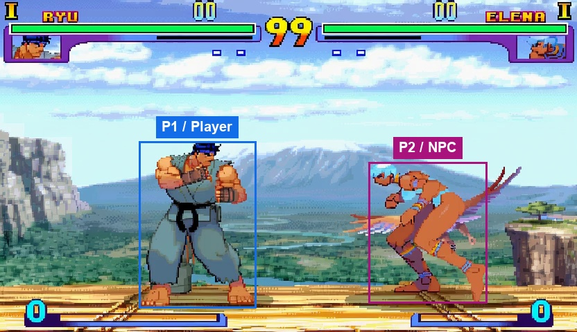
Labels mark the initial role assignment.
If the target jumps toward this NPC, and all of the following conditions hold: the target transitions from the ground into the air; the target's actual displacement is toward this NPC; the distance decreases; this NPC can act, then perform one appropriate anti-air attack against that same jump-in; then release all controls at a legal action boundary. Bind the whole condition and response to the same target instance, this NPC instance, the same event instance, the same target jump instance. The response is complete only when all of these hold: the anti-air hits that same target during that same jump, before the target lands; all of this NPC's controls are released. Before another response, require all of these reset conditions: the response has completed; all of this NPC's controls are released; natural recovery has completed; the previous bound event has ended; the trigger condition has cleared before rearming; a new event instance occurs; the target has landed. Only respond to events already observed; never anticipate the target's future chosen inputs. Select an action only at the shared 0.2-second boundaries (every 12 native ticks). Execute the selected 12-tick template completely without changing it inside the block: held keys remain held for all 12 ticks, and fixed short presses start at the boundary, last three ticks, and release for the following nine ticks. If an event or completion occurs inside a block, start or stop the response at the next legal boundary; finish the current template first. Outside a response, keep all controls released. Handle each bound event only once after rearming, and wait for a new event. Execution protocol: sf3_v2_causal_block12_rules_v1. Static execution parameters (native game coordinate units, before video resizing): {"anti_air_height": 110}. With anti_air_height zero, select the anti-air at the first legal response boundary. Otherwise wait until the target is descending with height above zero and at or below anti_air_height.
Player inputs across 25 control intervals. ×N means N consecutive intervals.
P1 · Move right + jump → No op ×5 → Move right → No op → Move right + jump → No op ×6 → Move right + jump → No op ×4 → Move right → Crouch → No op ×2 → Crouch
Track an approaching projectile, then parry it during its valid parry window. Ordinary blocking does not count.
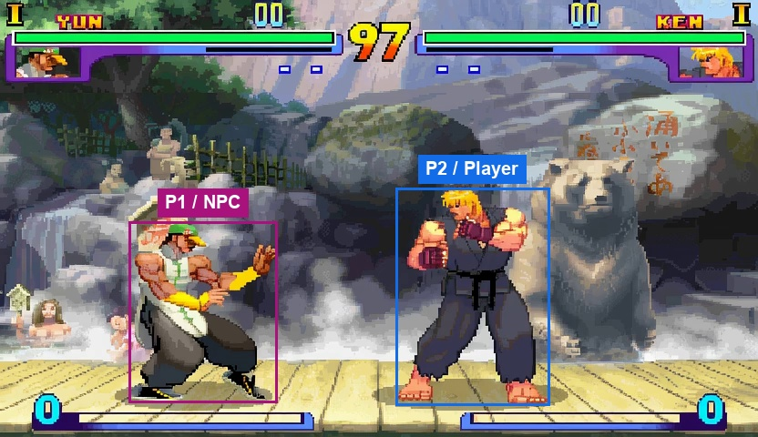
Labels mark the initial role assignment.
If the target actually spawns a projectile toward this NPC, and all of the following conditions hold: a real projectile spawn has been observed; the projectile was created by the target; that same projectile approaches this NPC; this NPC can parry, then track that same projectile with all controls released until its valid parry window; then parry that same projectile with a three-tick tap toward the target beginning at an action boundary; ordinary guard does not count as a parry; then release all controls at a legal action boundary. Bind the whole condition and response to the same target instance, this NPC instance, the same event instance, the same projectile instance. The response is complete only when all of these hold: that same projectile has actually been parried; this NPC has lost zero health; all of this NPC's controls are released. Before another response, require all of these reset conditions: the response has completed; all of this NPC's controls are released; natural recovery has completed; the previous bound event has ended; the trigger condition has cleared before rearming; a new event instance occurs; that same projectile has cleared; the parry input has been released; the game's parry has rearmed. Only respond to events already observed; never anticipate the target's future chosen inputs. Select an action only at the shared 0.2-second boundaries (every 12 native ticks). Execute the selected 12-tick template completely without changing it inside the block: held keys remain held for all 12 ticks, and fixed short presses start at the boundary, last three ticks, and release for the following nine ticks. If an event or completion occurs inside a block, start or stop the response at the next legal boundary; finish the current template first. Outside a response, keep all controls released. Handle each bound event only once after rearming, and wait for a new event. Execution protocol: sf3_v2_causal_block12_rules_v1. Static execution parameters (native game coordinate units, before video resizing): {"parry_gap": 80}. Wait until the bound projectile's horizontal distance from this NPC is at or below parry_gap before selecting the directional parry template.
Player inputs across 25 control intervals. ×N means N consecutive intervals.
P2 · Crouch → Move left + crouch → Move left + light punch → No op ×4 → Move right → Crouch → Move left + crouch → Move left + light punch → No op ×3 → Move left + jump ×2 → Move right ×3 → Move right + jump → Move left → Crouch → Move left + jump ×3
When the grounded opponent walks into normal-throw range, perform one normal throw.
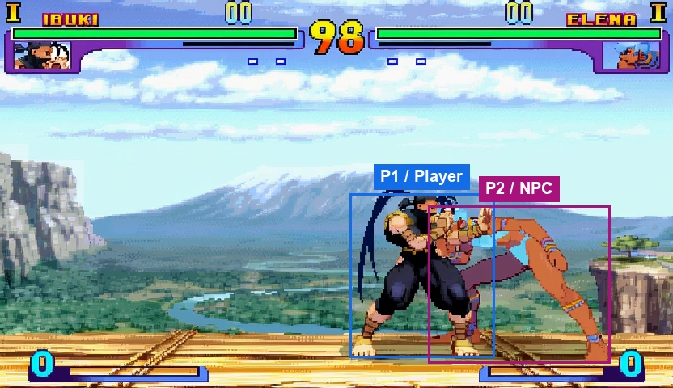
Labels mark the initial role assignment.
If the target actively walks from outside into the true normal-throw range, and all of the following conditions hold: the target was previously outside the calibrated normal-throw range; the target actively walks toward this NPC; the target crosses into the calibrated normal-throw range; this NPC can act; this NPC can execute a normal throw; the target can be captured by a normal throw; both fighters are grounded and eligible for the normal throw; the normal throw's required facing and geometry hold, then perform one appropriate New Generation normal throw against the same target, not a whiffed strike, special throw, or throw tech; then release all controls at a legal action boundary. Bind the whole condition and response to the same target instance, this NPC instance, the same event instance, the same entry into normal-throw range. The response is complete only when all of these hold: this NPC's actual normal throw captures that same target; the throw sequence is complete; all of this NPC's controls are released. Before another response, require all of these reset conditions: the response has completed; all of this NPC's controls are released; natural recovery has completed; the previous bound event has ended; the trigger condition has cleared before rearming; a new event instance occurs; the game's throw sequence and recovery have completed; the target has exited the true normal-throw range; both fighters are eligible for a normal throw again. Only respond to events already observed; never anticipate the target's future chosen inputs. Select an action only at the shared 0.2-second boundaries (every 12 native ticks). Execute the selected 12-tick template completely without changing it inside the block: held keys remain held for all 12 ticks, and fixed short presses start at the boundary, last three ticks, and release for the following nine ticks. If an event or completion occurs inside a block, start or stop the response at the next legal boundary; finish the current template first. Outside a response, keep all controls released. Handle each bound event only once after rearming, and wait for a new event. Execution protocol: sf3_v2_causal_block12_rules_v1. Static execution parameters (native game coordinate units, before video resizing): {"throw_box": [-35, 10, 0, 16]}. throw_box is this NPC's local [x offset, width, y offset, height] normal-throw box. Reflect its horizontal extent with this NPC's facing and require horizontal overlap with the bound target's throwable body, together with the grounded throw-eligibility conditions.
Player inputs across 25 control intervals. ×N means N consecutive intervals.
P1 · Move left → Move right → No op → Crouch → No op ×7 → Move left ×3 → No op → Crouch → No op → Move right → Crouch ×3 → Move left → Crouch → Move right → Crouch
After observing a projectile fired toward this NPC, jump to evade that projectile.
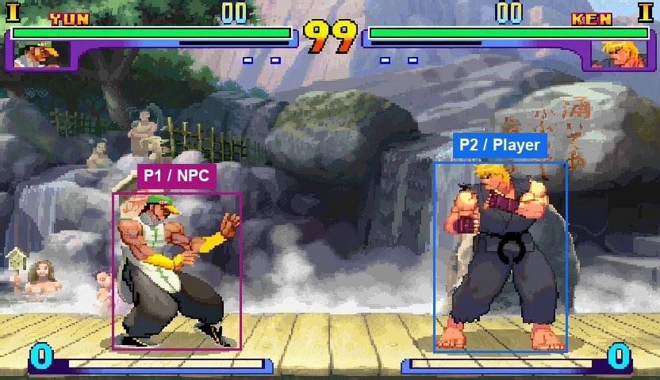
Labels mark the initial role assignment.
If the target actually spawns a projectile toward this NPC, and all of the following conditions hold: a real projectile spawn has been observed; the projectile was created by the target; that projectile's trajectory threatens this NPC; this NPC is grounded and can act, then jump to evade that same projectile; then release all controls at a legal action boundary. Bind the whole condition and response to the same target instance, this NPC instance, the same event instance, the same projectile instance. The response is complete only when all of these hold: this NPC became airborne; that same projectile has cleared without hitting this NPC; this NPC has landed; all of this NPC's controls are released. Before another response, require all of these reset conditions: the response has completed; all of this NPC's controls are released; natural recovery has completed; the previous bound event has ended; the trigger condition has cleared before rearming; a new event instance occurs; that same projectile has cleared; this NPC is grounded. Only respond to events already observed; never anticipate the target's future chosen inputs. Select an action only at the shared 0.2-second boundaries (every 12 native ticks). Execute the selected 12-tick template completely without changing it inside the block: held keys remain held for all 12 ticks, and fixed short presses start at the boundary, last three ticks, and release for the following nine ticks. If an event or completion occurs inside a block, start or stop the response at the next legal boundary; finish the current template first. Outside a response, keep all controls released. Handle each bound event only once after rearming, and wait for a new event. Execution protocol: sf3_v2_causal_block12_rules_v1. Static execution parameters (native game coordinate units, before video resizing): {"jump_gap": 140}. With jump_gap zero, select the jump at the first legal response boundary. Otherwise wait until the bound projectile's horizontal distance from this NPC is at or below jump_gap.
Player inputs across 25 control intervals. ×N means N consecutive intervals.
P2 · Crouch → Move left + crouch → Move left + light punch → No op ×7 → Crouch → Move left + crouch → Move left + light punch → No op ×6 → Move right + jump → Move left → Move left + jump → No op → Move left ×2
If the opponent retreats out of close range, approach the same opponent, then stop when close.
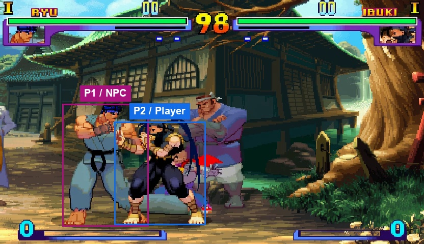
Labels mark the initial role assignment.
If the target leaves the near band while actively moving away from this NPC, and all of the following conditions hold: the target was previously inside the near-exit threshold; the target actively moves away from this NPC; the distance increases continuously; the distance crosses the calibrated near-exit threshold, then move toward that same target; then stop at the calibrated close distance; then release all controls at a legal action boundary. Bind the whole condition and response to the same target instance, this NPC instance, the same event instance, the same distance-threshold crossing. The response is complete only when all of these hold: the distance is at or below the calibrated response-stop threshold; all of this NPC's controls are released. Before another response, require all of these reset conditions: the response has completed; all of this NPC's controls are released; natural recovery has completed; the previous bound event has ended; the trigger condition has cleared before rearming; a new event instance occurs; the target has re-entered the near band. Only respond to events already observed; never anticipate the target's future chosen inputs. Select an action only at the shared 0.2-second boundaries (every 12 native ticks). Execute the selected 12-tick template completely without changing it inside the block: held keys remain held for all 12 ticks, and fixed short presses start at the boundary, last three ticks, and release for the following nine ticks. If an event or completion occurs inside a block, start or stop the response at the next legal boundary; finish the current template first. Outside a response, keep all controls released. Handle each bound event only once after rearming, and wait for a new event. Execution protocol: sf3_v2_causal_block12_rules_v1. Static execution parameters (native game coordinate units, before video resizing): {"close_gap": 75, "near_exit": 100}. Use near_exit for the target's outward distance crossing; stop approaching once the distance is at or below close_gap.
Player inputs across 25 control intervals. ×N means N consecutive intervals.
P2 · Move right ×2 → No op ×3 → Move right ×2 → No op ×3 → Move right ×2 → No op ×3 → Crouch → No op → Move left ×2 → Crouch → Move left → No op → Crouch → Move left → No op
If the opponent approaches into close range, retreat from the same opponent, then stop at a safe distance.
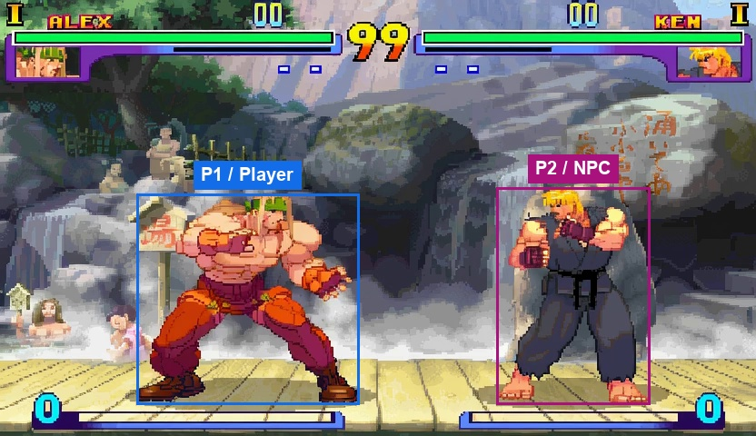
Labels mark the initial role assignment.
If the target enters the near band while actively approaching this NPC, and all of the following conditions hold: the target was previously outside the near-entry threshold; the target actively moves toward this NPC; the distance decreases; the distance crosses the calibrated near-entry threshold, then move away from that same target; then stop at the calibrated safe distance; then release all controls at a legal action boundary. Bind the whole condition and response to the same target instance, this NPC instance, the same event instance, the same distance-threshold crossing. The response is complete only when all of these hold: the distance is at or above the calibrated response-stop threshold; all of this NPC's controls are released. Before another response, require all of these reset conditions: the response has completed; all of this NPC's controls are released; natural recovery has completed; the previous bound event has ended; the trigger condition has cleared before rearming; a new event instance occurs; the target has exited the near band. Only respond to events already observed; never anticipate the target's future chosen inputs. Select an action only at the shared 0.2-second boundaries (every 12 native ticks). Execute the selected 12-tick template completely without changing it inside the block: held keys remain held for all 12 ticks, and fixed short presses start at the boundary, last three ticks, and release for the following nine ticks. If an event or completion occurs inside a block, start or stop the response at the next legal boundary; finish the current template first. Outside a response, keep all controls released. Handle each bound event only once after rearming, and wait for a new event. Execution protocol: sf3_v2_causal_block12_rules_v1. Static execution parameters (native game coordinate units, before video resizing): {"near_entry": 100, "safe_gap": 150}. Use near_entry for the target's inward distance crossing; stop retreating once the distance is at or above safe_gap.
Player inputs across 25 control intervals. ×N means N consecutive intervals.
P1 · Move right ×3 → No op ×4 → Move right ×3 → No op ×4 → Move right ×3 → No op ×4 → Move left ×2 → Crouch ×2
After the opponent misses an attack, punish once during that attack’s recovery.
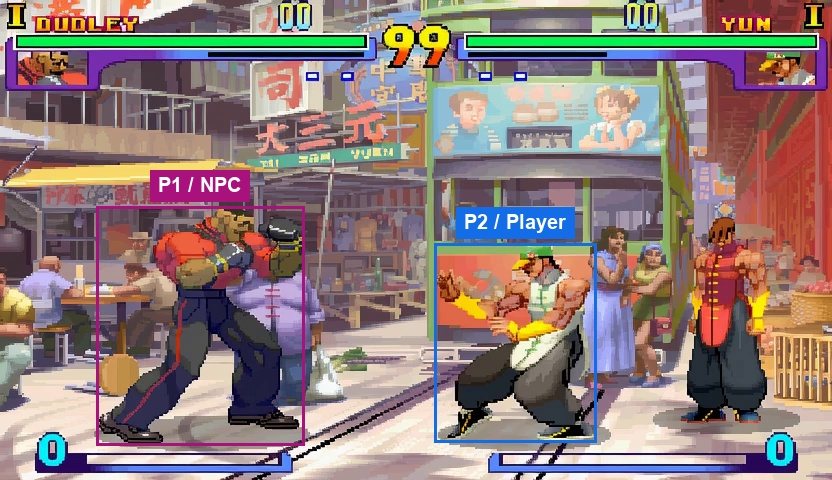
Labels mark the initial role assignment.
If the target's missed attack enters recovery, and all of the following conditions hold: the target attack's active interval has finished; that same attack has made no hit, block, or parry contact; that same target attack is still in its recovery interval; this NPC can act, then approach the same target if needed; then perform one appropriate punish attack against that same target attack's recovery; then release all controls at a legal action boundary. Bind the whole condition and response to the same target instance, this NPC instance, the same event instance, the same target attack instance, that same attack's recovery interval. The response is complete only when all of these hold: the punish hits the same target within that same attack's recovery interval; all of this NPC's controls are released. Before another response, require all of these reset conditions: the response has completed; all of this NPC's controls are released; natural recovery has completed; the previous bound event has ended; the trigger condition has cleared before rearming; a new event instance occurs; that same target attack's recovery has finished. Only respond to events already observed; never anticipate the target's future chosen inputs. Select an action only at the shared 0.2-second boundaries (every 12 native ticks). Execute the selected 12-tick template completely without changing it inside the block: held keys remain held for all 12 ticks, and fixed short presses start at the boundary, last three ticks, and release for the following nine ticks. If an event or completion occurs inside a block, start or stop the response at the next legal boundary; finish the current template first. Outside a response, keep all controls released. Handle each bound event only once after rearming, and wait for a new event. Execution protocol: sf3_v2_causal_block12_rules_v1. Static execution parameters (native game coordinate units, before video resizing): {"punish_gap": 10000}. While the bound attack is still in its recovery interval, approach if the distance exceeds punish_gap; otherwise select the qualified punish attack.
Player inputs across 25 control intervals. ×N means N consecutive intervals.
P2 · Medium kick → No op ×3 → Move left ×2 → No op → Medium kick → No op ×3 → Crouch ×2 → Move left + jump ×3 → Move right → Move left → Move right → Move left + jump → Move right + jump → No op ×2 → Move left → Move left + jump
After taking an unblocked hit, wait until recovery ends, then counterattack the same opponent once.
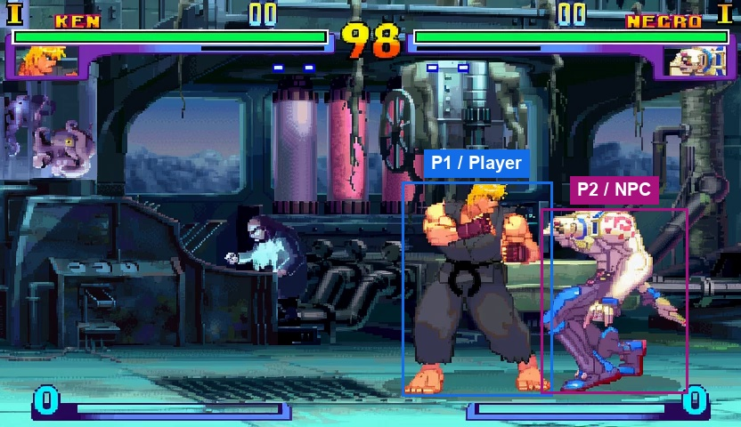
Labels mark the initial role assignment.
If the target deals unblocked damage to this NPC, and all of the following conditions hold: the damage source is the target; the damage victim is this NPC; this NPC has lost health; the damage is an unblocked hit rather than guard chip damage; the source is a strike or projectile covered by this rule, then keep all controls released until this NPC's hit recovery ends; then wait until this NPC can act; then approach the same target if needed; then perform one appropriate counterattack against the same target; then release all controls at a legal action boundary. Bind the whole condition and response to the same target instance, this NPC instance, the same event instance, the same target attack instance, the same damage event on this NPC, this NPC's same hit-recovery interval. The response is complete only when all of these hold: the counterattack hits the same target after this NPC recovers; all of this NPC's controls are released. Before another response, require all of these reset conditions: the response has completed; all of this NPC's controls are released; natural recovery has completed; the previous bound event has ended; the trigger condition has cleared before rearming; a new event instance occurs; this NPC's hit stun and knockdown recovery have cleared. Only respond to events already observed; never anticipate the target's future chosen inputs. Select an action only at the shared 0.2-second boundaries (every 12 native ticks). Execute the selected 12-tick template completely without changing it inside the block: held keys remain held for all 12 ticks, and fixed short presses start at the boundary, last three ticks, and release for the following nine ticks. If an event or completion occurs inside a block, start or stop the response at the next legal boundary; finish the current template first. Outside a response, keep all controls released. Handle each bound event only once after rearming, and wait for a new event. Execution protocol: sf3_v2_causal_block12_rules_v1. Static execution parameters (native game coordinate units, before video resizing): {"response_gap": 60}. After hit recovery, approach while the target's horizontal distance exceeds response_gap, then select the counterattack when grounded and actionable.
Player inputs across 25 control intervals. ×N means N consecutive intervals.
P1 · Light punch → No op ×6 → Move right → No op → Light punch → No op ×6 → Move right → No op → Light punch → No op ×6
When an incoming attack threatens this NPC, use the guard that matches that attack’s height.
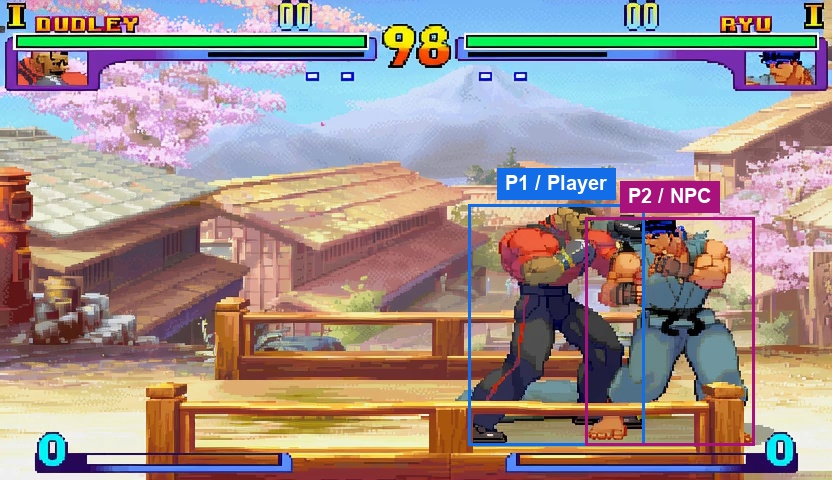
Labels mark the initial role assignment.
If the target starts an attack with a known guard height that threatens this NPC, and all of the following conditions hold: the target's attack faces this NPC; the target's attack is within the calibrated threat range; the same attack's high, overhead, mid, or low guard height is known from its actual properties; this NPC can guard before contact, then apply the guard branch matching that same attack's height; then release all controls at the next action boundary after that same threat ends. Bind the whole condition and response to the same target instance, this NPC instance, the same event instance, the same target attack instance, that same attack's guard height. If the attack is high or overhead, use standing guard by holding away from the target. If the attack is low, use crouching guard by holding down and away from the target. If the attack is mid, use a valid guard for that mid attack. The response is complete only when all of these hold: that same attack has actually been blocked with the matching guard height; this NPC has received no unblocked damage; all of this NPC's controls are released. Before another response, require all of these reset conditions: the response has completed; all of this NPC's controls are released; natural recovery has completed; the previous bound event has ended; the trigger condition has cleared before rearming; a new event instance occurs; that same target attack's recovery has finished; guard has been released. Only respond to events already observed; never anticipate the target's future chosen inputs. Select an action only at the shared 0.2-second boundaries (every 12 native ticks). Execute the selected 12-tick template completely without changing it inside the block: held keys remain held for all 12 ticks, and fixed short presses start at the boundary, last three ticks, and release for the following nine ticks. If an event or completion occurs inside a block, start or stop the response at the next legal boundary; finish the current template first. Outside a response, keep all controls released. Handle each bound event only once after rearming, and wait for a new event. Execution protocol: sf3_v2_causal_block12_rules_v1. Static execution parameters (native game coordinate units, before video resizing): {"threat_gap": 160, "threat_policy": "qualified_attack_geometry_v1"}. The qualified_attack_geometry_v1 threat policy uses measured attack reach and this NPC's vulnerability geometry, including the calibrated proven trigger gap. threat_gap is the fallback when the required measured geometry is unavailable.
Player inputs across 25 control intervals. ×N means N consecutive intervals.
P1 · No op ×2 → Crouch + heavy kick → No op ×4 → Move right ×3 → No op → Crouch + heavy kick → No op ×4 → Move right ×3 → No op → Crouch + heavy kick → No op ×4
Keep all controls released throughout the video. Do not initiate movement, attacks, or defensive responses.
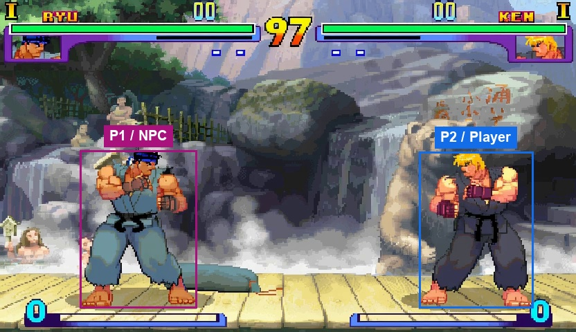
Labels mark the initial role assignment.
Keep all controls released throughout the entire video. Do not issue movement, attack, guard, parry, or throw inputs, and do not initiate any response. Natural motion and recovery may continue after controls are released.
Player inputs across 25 control intervals. ×N means N consecutive intervals.
P2 · No op ×4 → Jump → No op ×10 → Crouch ×3 → No op ×7
02 / Generated rollouts
One selected example for each of nine reaction rules, plus a passive no-op reference, from the 23 September HNM benchmark run.
10 selected demos
Video 1 / 10
If the target player moves away from this NPC, then move toward that player until close.
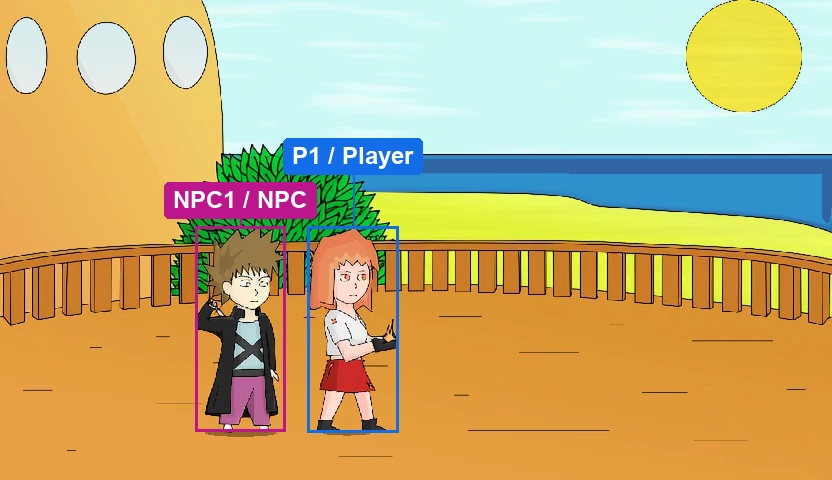
The first second holds this labeled frame, followed by the complete generated rollout.
Player inputs across 25 control intervals. ×N means N consecutive intervals.
P1 · No op ×5 → Move right ×2 → No op ×18
If the target player moves toward this NPC and enters close range, then move away from that player until at a safe distance.
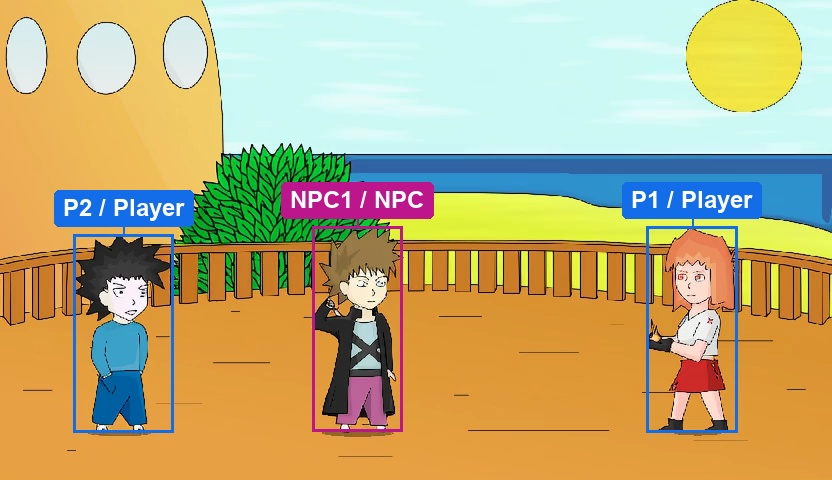
The first second holds this labeled frame, followed by the complete generated rollout.
Player inputs across 25 control intervals. ×N means N consecutive intervals.
P1 · No op ×25
P2 · No op ×4 → Move right ×2 → No op ×19
If the target player's punch or kick misses, then move toward that player and punch during their recovery.
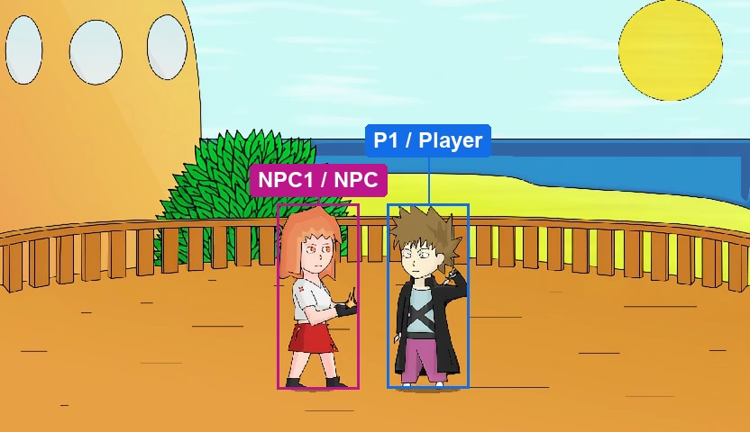
The first second holds this labeled frame, followed by the complete generated rollout.
Player inputs across 25 control intervals. ×N means N consecutive intervals.
P1 · No op ×3 → Kick → No op ×21
If the target player throws a shuriken, then jump to dodge it.
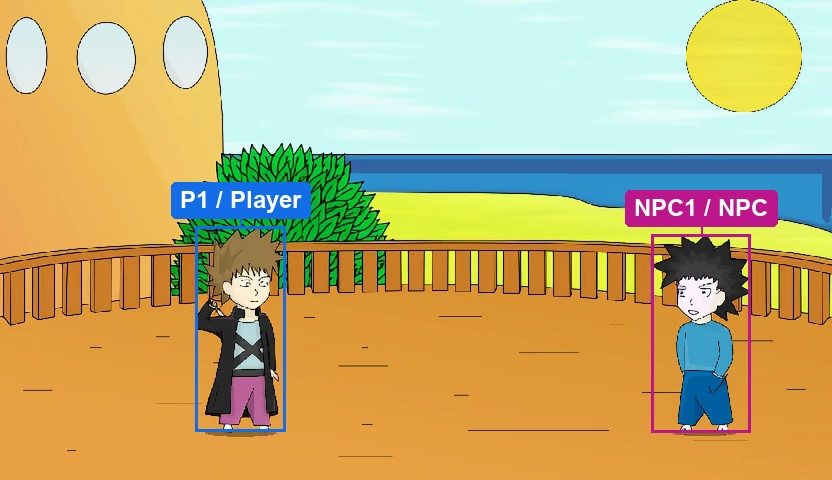
The first second holds this labeled frame, followed by the complete generated rollout.
Player inputs across 25 control intervals. ×N means N consecutive intervals.
P1 · No op ×4 → Throw shuriken → No op ×20
The jump is clear; the projectile is difficult to resolve in the generated clip.
If another external player hits the target player with a punch, kick, or thrown shuriken, then move toward the target player and kick as they recover.
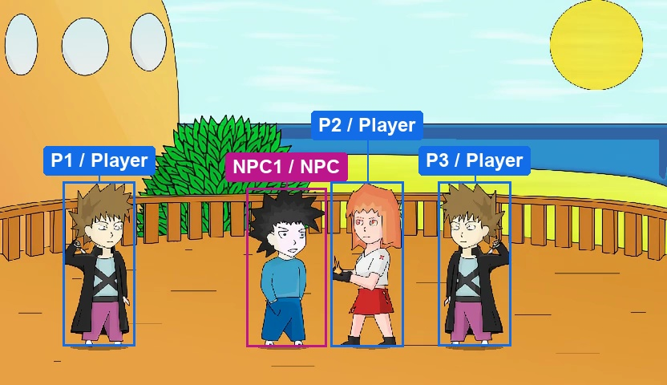
The first second holds this labeled frame, followed by the complete generated rollout.
Player inputs across 25 control intervals. ×N means N consecutive intervals.
P1 · No op ×25
P2 · No op ×25
P3 · No op ×3 → Move left + punch → No op ×21
If the target player hits this NPC with a punch, kick, or thrown shuriken, then after this NPC recovers, move toward that player and kick once.
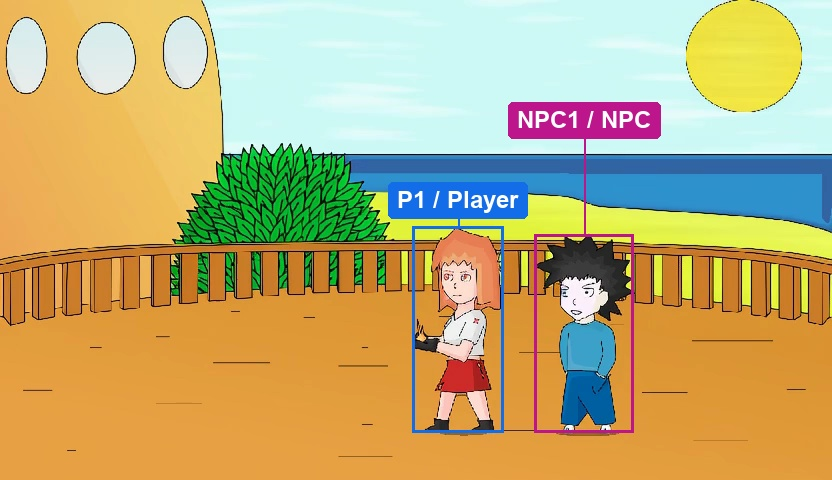
The first second holds this labeled frame, followed by the complete generated rollout.
Player inputs across 25 control intervals. ×N means N consecutive intervals.
P1 · No op ×5 → Move right + punch → No op ×19
If the target player punches or kicks this NPC, then block standing for high attacks and crouching for low attacks.
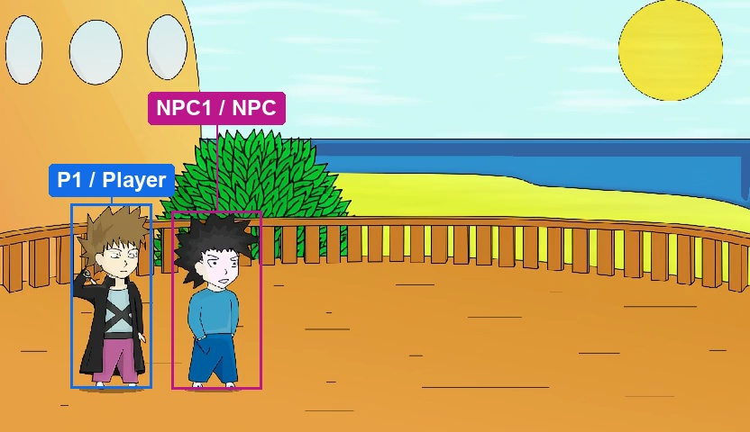
The first second holds this labeled frame, followed by the complete generated rollout.
Player inputs across 25 control intervals. ×N means N consecutive intervals.
P1 · No op ×5 → Move right → Kick → No op ×18
The guard response is brief; matching the attack height remains ambiguous in this example.
If the target player jumps toward this NPC, then punch that player while they are airborne.
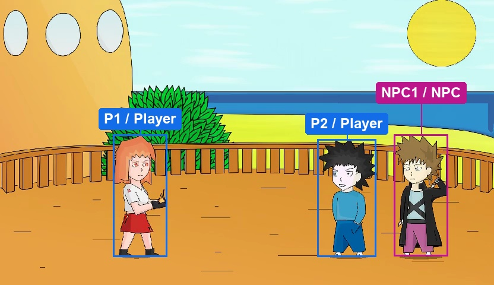
The first second holds this labeled frame, followed by the complete generated rollout.
Player inputs across 25 control intervals. ×N means N consecutive intervals.
P1 · No op ×25
P2 · No op ×3 → Move right + jump → No op ×21
If the target player's punch or kick makes contact with another external player, then move toward the target player and kick once.
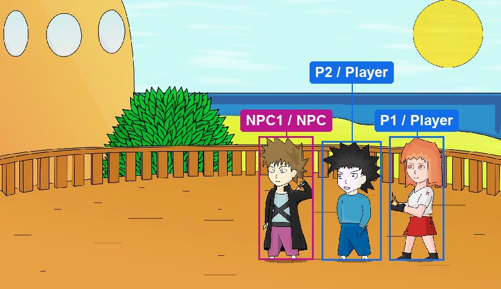
The first second holds this labeled frame, followed by the complete generated rollout.
Player inputs across 25 control intervals. ×N means N consecutive intervals.
P1 · No op ×25
P2 · No op ×5 → Move right + punch → No op ×19
Keep all controls released throughout the video (no-op).
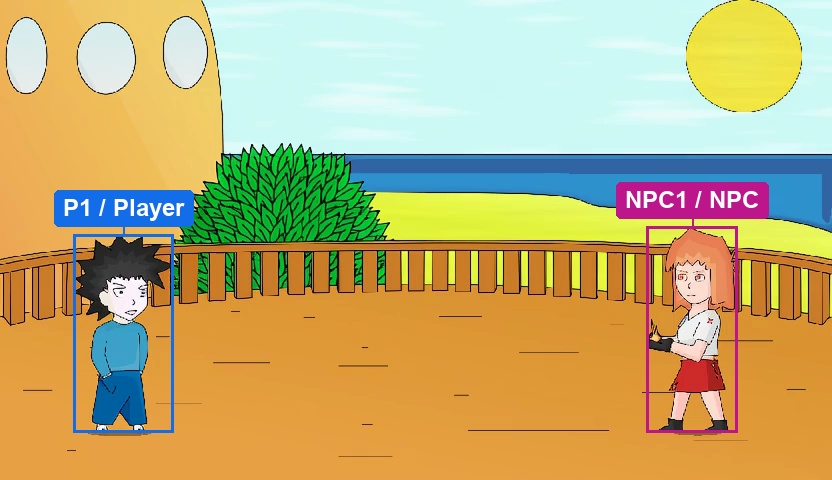
The first second holds this labeled frame, followed by the complete generated rollout.
Player inputs across 25 control intervals. ×N means N consecutive intervals.
P1 · No op ×3 → Jump → No op ×11 → Crouch ×3 → No op ×7